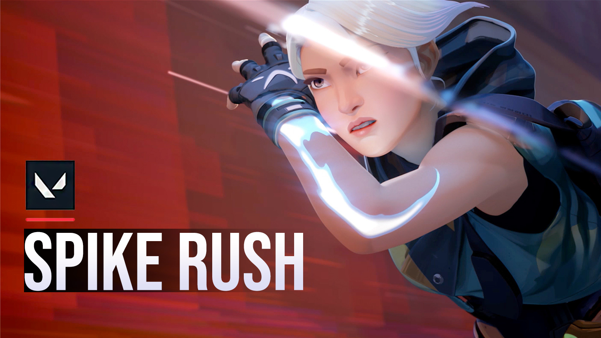
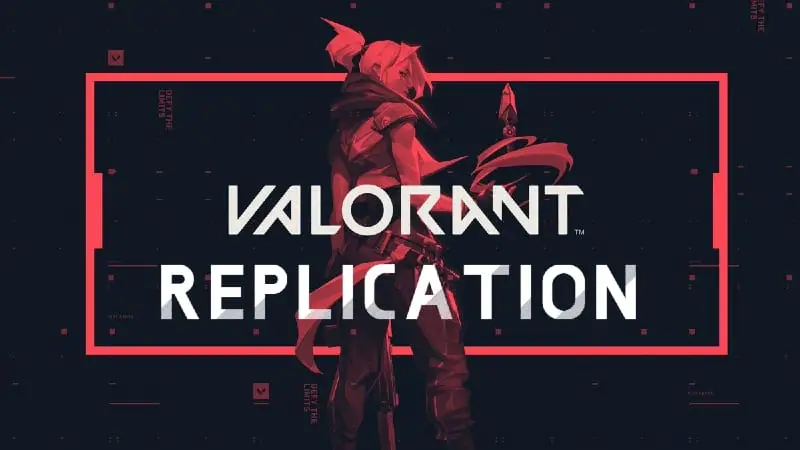
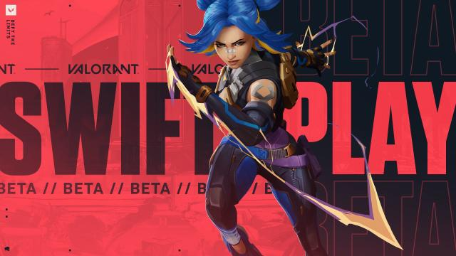
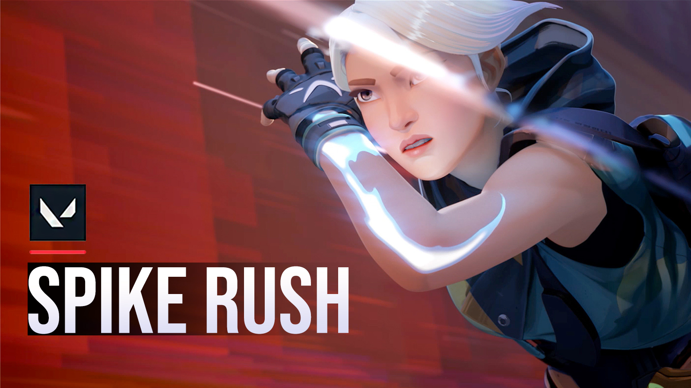
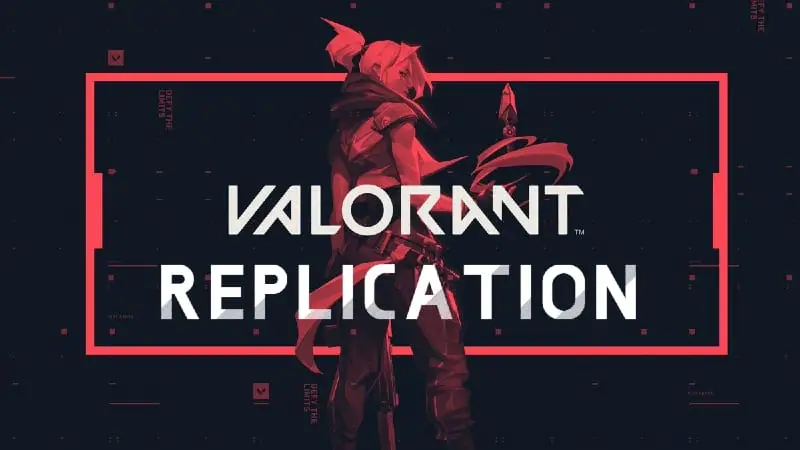
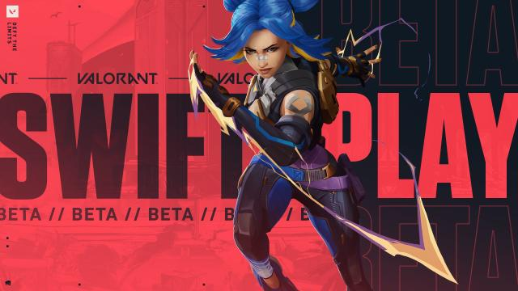
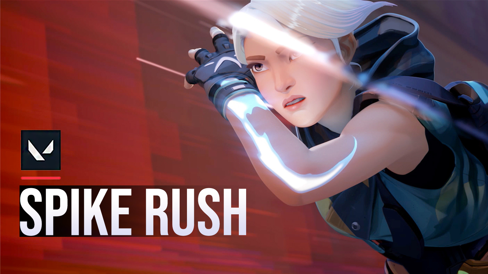
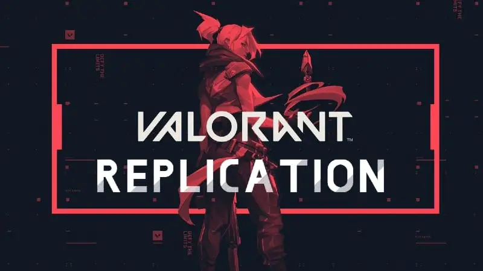
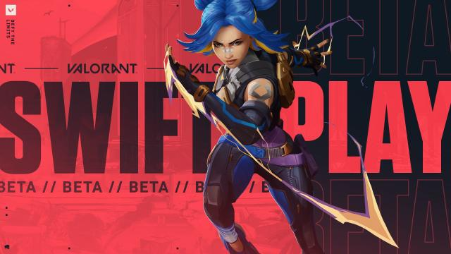

Valorant is a free-to-play first-person tactical hero shooter developed and published by Riot Games, for Windows.
Valorant takes inspiration from the Counter-Strike series, borrowing several mechanics such as the buy menu, spray patterns, and inaccuracy while moving.




Fade is the 20th Agent of Valorant. She is an Initiator, specialised in information gathering. She has a kit adapted to the tracking of enemies, which requires whoever plays her to be creative and efficient for a good use. This new Agent will find her place as a lone wolf, but Fade will reveal her full potential in team actions.

Agent Sage is one of Valorant's sentinels.
Her abilities kit is very useful, and allows her to both reduce the opponents’ movement or vision and to heal or resuscitate an ally.
She is very complete and will undoubtedly be an Agent of choice to pick in your team.

Phoenix is one of Valorant's Duelists.
His abilities kit is based on mobility, allowing him to take the high ground and to move faster than his opponents.
He is very smart and will undoubtedly be an Agent of choice to pick in your team.